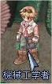
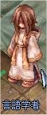
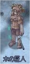
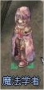

画像にリンクがはってあるものは、クリックすると別窓で大きめサイズが表示されます。
[ドランス]
所在地；ミッドガルド連合軍駐屯地（197,237） |
  |
[ディクショナリー]
所在地；ミッドガルド連合軍駐屯地中央建物内2F |
  |
[小さな妖精]
所在地；スプレンディッドフィールド（spl_fild02:34,223） |
   |
[木の巨人]
所在地；マヌクフィールド03（236,105） |
  |
[ウィスパ]
所在地；ミッドガルド連合軍駐屯地（147,256） |
 |
back
(c) Gravity Co., Ltd. & Lee MyoungJin(studio DTDS). All rights reserved.
(c) GungHo Online Entertainment, Inc. All Rights Reserved.
当コンテンツの再利用（再転載・配布など）は、禁止しています。